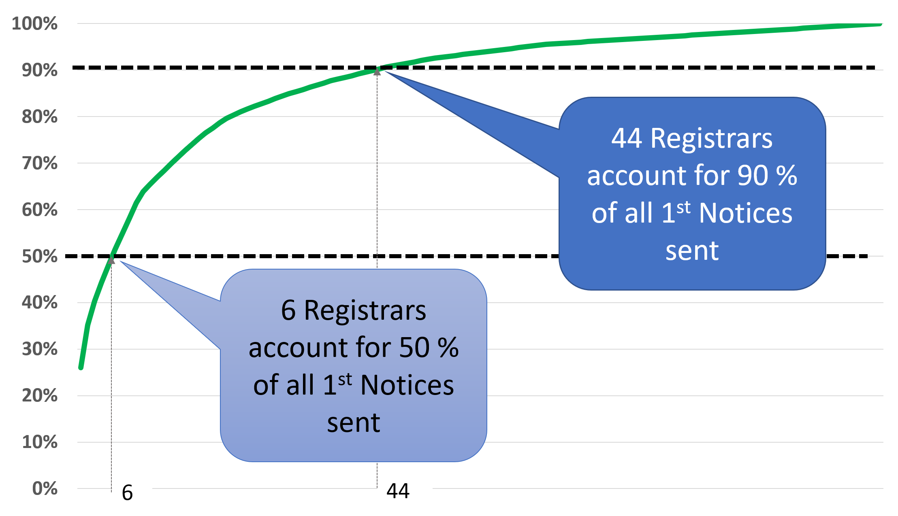

The metric M1 tracks the Inaccuracy of Whois Data, by measuring the number of complaints validated in a given month. The compliance department of ICANN receives a number of complaints every month. Out of that number, some will be closed immediately, and some will be validated. When a complaint is validated, ICANN will send a notice to the registrar for the domain. Complaints go through a succession of stages:
We don't want to track the raw number of complaints received by ICANN, as the number may contains complaints that are not actually valid. Instead, we track the number of validated complaints by counting the notices sent each month, i.e. at the second stage of the process. The first submetric just tries this total number of complaints, divided by the total number of registered domains:
We have found however that "the average does not tell the story". If everything was equal, the number of complaints per registrar should be the value of the ratio M1.1 multiplied by how many million domains this registrar manages. But that's not the case. We plotted the cumulative frequency distribution of complaints per registrar in January 2018, and it looks like this:
This is a classic "long tail" distribution. Most of the 1954 registrars have no complaints at all, or maybe just a few. It takes only 6 registrars to account for 50% of all complaints, and 44 to account for 90%. The simplest way to track this would be to provide a table of the registrars with the most complaints, but this would raise serious privacy concerns. Instead, we chose to track the shape of the distribution with two submetrics:
The current values of these numbers are displayed here.